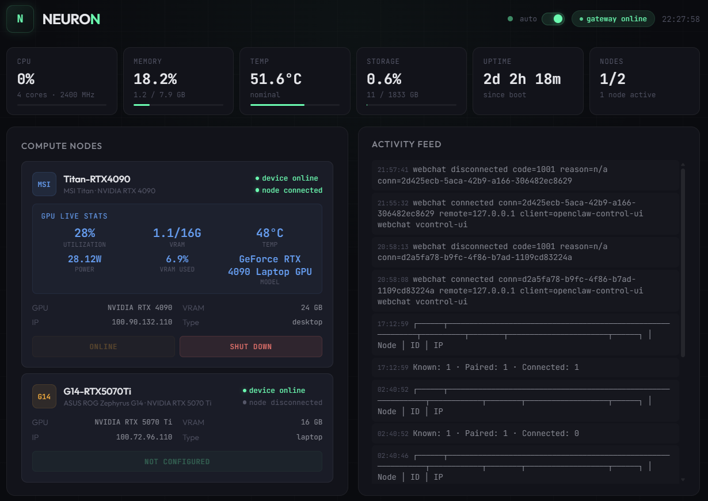
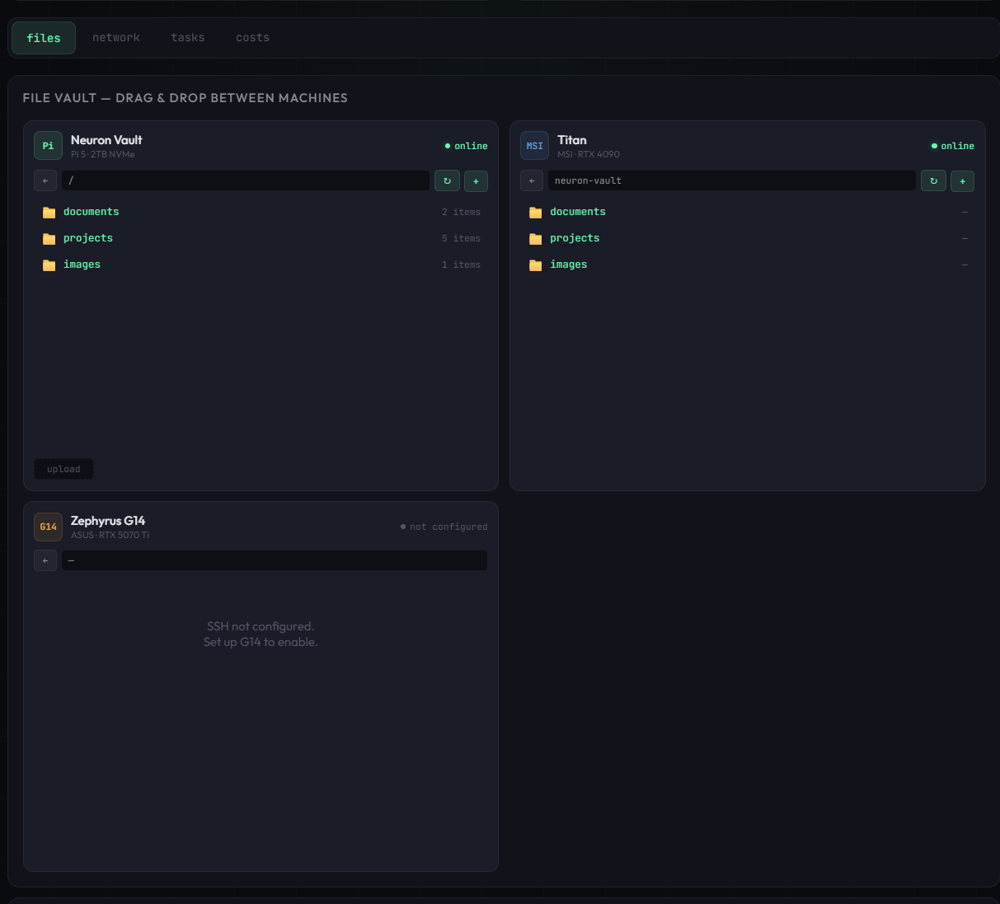
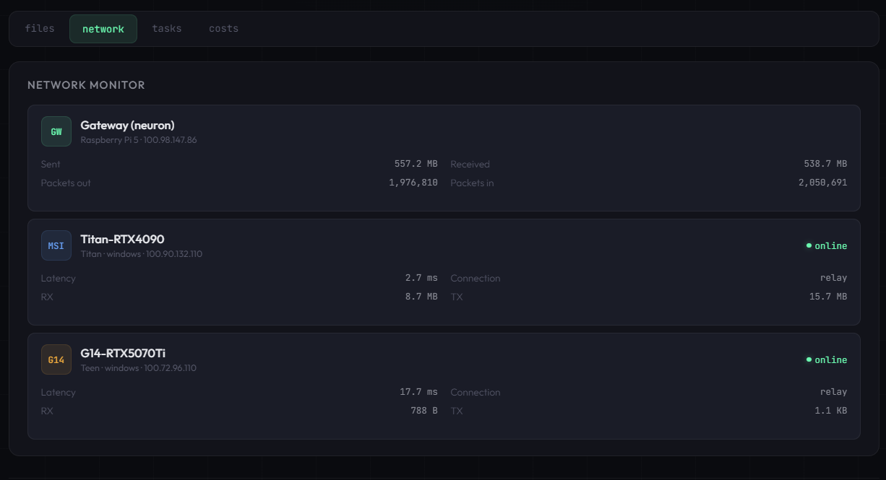
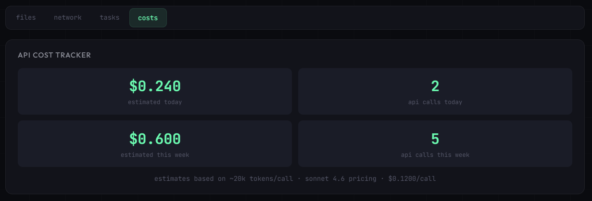
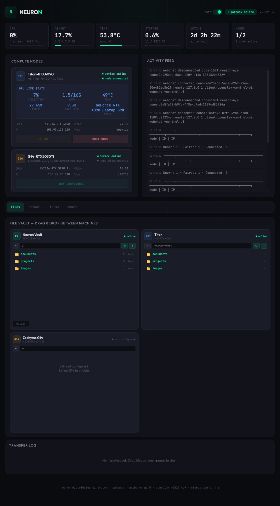

N
NEURON
all systems operational
Distributed AI system — personal intelligent agent with persistent memory, multi-device orchestration, GPU compute nodes, and online interactive cross file manager.
System architecture
any device
Browser / phone
→
tailscale https
Dashboard
→
raspberry pi 5
Gateway
→
worker nodes
GPU compute
all traffic encrypted end-to-end via tailscale wireguard mesh · no public
internet exposure · funnel disabled
Live dashboard preview
Control hub — real-time system monitoring

Live metrics, GPU stats from RTX 4090 via SSH, node power controls
(Wake-on-LAN / remote shutdown), and real-time activity feed — all updating every 5 seconds
File vault | Network | Costs



Full Overview

Gateway — Raspberry Pi 5
neuron
Always-on AI brain · 24/7 headless server · central orchestrator
online
Hostnameneuron
OSDebian Trixie (aarch64)
CPUBCM2712 · 4× Cortex-A76
RAM8 GB
LPDDR4X
StorageSamsung 980 Pro 2TB NVMe
CasePironman 5 MAX
Gateway port18789 · bind: lan
AI modelClaude Sonnet 4.6
DashboardFastAPI + HTML on port 8080
File vault~/neuron-storage/ (2TB)
Auto-startsystemd + linger enabled
HTTPS accessTailscale Serve (manual)
Services running
OpenClaw gatewayactive (systemd)
Neuron dashboardactive (port 8080)
SSH daemonactive (port 22)
Tailscale serveactive (HTTPS proxy)
Sleep / suspendmasked (disabled)
Heartbeatdisabled (cost saving)
Agent capabilities
Dashboard features
Real-time monitoring
Live stats
CPU, memory, temperature, storage, uptime — updating every 5 seconds
with auto-refresh toggle.
GPU performance
SSH polling
Live GPU utilization, VRAM, temperature, and power draw from RTX 4090
via SSH + nvidia-smi.
Power management
WoL + SSH
Wake-on-LAN to power on, SSH shutdown to power off — all from the
dashboard, no OpenClaw dependency.
File vault
Interactive file manager
Three-pane drag-and-drop file manager spanning Pi, MSI, and G14.
SCP-based transfers through Pi relay.
Network monitor
Tailscale peers
Latency, bandwidth, direct/relay status, and packet counts for all
Tailscale mesh peers.
Cost tracker
API estimates
Daily and weekly Anthropic API cost estimates based on log analysis and
Sonnet 4.6 pricing.
Resilience & recovery
Pi reboot
Auto-recovers
Gateway + dashboard auto-start via systemd with user linger. Tailscale
Serve persists. MSI node reconnects via 10-second retry loop.
Internet outage
Auto-recovers
Gateway keeps running locally on the Pi. Tailscale reconnects
automatically when internet returns. Node retries every 10 seconds.
Gateway crash
Auto-recovers
Systemd detects the crash and restarts the gateway. Node detects
disconnect and retries until gateway is back online.
Network & access
Tailscale mesh VPN
Devices enrolled3 (Pi, titan, g14)
EncryptionWireGuard (end-to-end)
Connectiondirect (peer-to-peer)
Funneldisabled (secure)
Access points
DashboardHTTPS via Tailscale Serve
SSHssh
user@neuron.local
Authenticationtoken + device pairing
Accessible fromany Tailscale device
Key design decisions
Node connectionDirect ws:// via Tailscale IP (not Serve)
node.json caveatAuto-regenerated — custom script bypasses
File transfersSCP with forward slashes for Windows
Power managementWoL + SSH (bypasses OpenClaw)
Power consumption~6-17W (≈ $1.50/month)
Estimated SSD lifespan5-10+ years at current usage